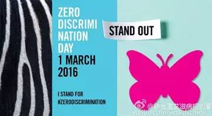
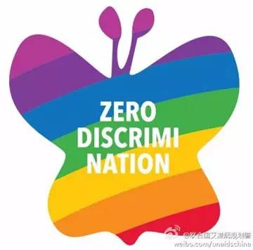

“如果不能消除歧视，我们就不能真正实现世界和平、安全和繁荣。”联合国副秘书长、联合国艾滋病规划署执行主任西迪贝说，“人人都享有健康权和尊严，政府、社区、企业都应该行动起来，制定法律和政策对艾滋病感染者进行保护和帮助。”
3月1日为艾滋#零歧视#日，零歧视是艾滋病防治的基础。对艾滋病感染者的歧视比艾滋病病毒本身所导致的死亡更多。

（UNAIDS 零歧视日主题海报）
在这个日子里我们一起来涨知识，一起来看看，我国对艾滋感染者的制度性歧视。
(下文摘录于西北政法大学教授 褚宸舸 《中国艾滋病患者权利的法律歧视问题研究》第三部分)
中国法律规范中对艾滋病患者的歧视
我国《宪法》第38条规定，人的尊严不受侵犯。禁止用任何方法对公民进行侮辱、诽谤和诬告陷害。《艾滋病与人权国际准则》规定：捍卫艾滋病患者的尊严是战胜艾滋病的基础。限制脆弱人群的行动自由和相关的法律条文都应当被废除。《艾滋病病人基本权利宣言》也有类似规定。我国的《艾滋病防治条例》第42条规定了艾滋病患者的知情权：“对确诊的艾滋病病毒感染者和艾滋病病人，医疗卫生机构的工作人员应当将其感染或者发病的事实告知本人。”同时，还应当保障其隐私权（第39条第2款）：“未经本人或者其监护人同意，任何单位或者个人不得公开艾滋病病毒感染者、艾滋病病人及其家属的姓名、住址、工作单位、肖像、病史资料以及其他可能推断出其具体身份的信息。”
然而，司法部和卫生部联合颁布的《关于对于监狱、劳教所羁押、收教人员开展艾滋病病毒抗体筛查的通知》规定，在对监狱、劳教所羁押、收教人员的艾滋病病毒筛查过程中，对于HIV抗体呈阳性的感染者，经CD4细胞检测暂时不需要进行抗逆转录治疗的，其感染情况可以不告知感染者。该《通知》明显和上位法《艾滋病防治条例》相冲突。韩跃红通过对云南羁押场所的调研，发现羁押场所普遍没有将艾滋病病情告知羁押人员。司法部和卫生部之所以制定这样的规定，可能旨在维护羁押场所的稳定。但是，病情不告知本人，首先侵犯患者的知情权。其次，若本人不知情而不采取相应措施，在羁押场所中有可能造成感染。
强制检测与知情权直接相关，自愿咨询和自愿检测原则的基础是充分知情和同意。除自愿检测外，国际上还有知情不拒绝检测（主要在医疗场所进行）的做法。《艾滋病病人基本权利宣言》对于艾滋病患者的活动自由权、人身自由和安全保障做出了相应的规定。每个艾滋病患者都有在国家境内自由活动和自由选择住所的权利，不能因为是艾滋病患者就禁止艾滋病患者出入境。除非有法律规定，任何人不得被随意拘留和逮捕。
我国《艾滋病防治条例》第23条明确国家实行艾滋病自愿咨询和自愿检测制度。但是，《云南省艾滋病防治条例》、《山东省艾滋病防治办法》、《浙江省艾滋病防治条例》、《湖北省艾滋病防治条例》、《重庆市预防控制性病艾滋病条例》、《上海市艾滋病防治办法》都规定对于高危人群或者出入境人员进行艾滋病强制检测。其中《湖北省艾滋病防治条例》和《上海市艾滋病防治办法》比其他省市地方性法规的强制检测范围规定都要广泛。
上述地方性法规对于艾滋病强制检测的规定，违反了上位法《艾滋病防治条例》的规定，违背艾滋病自愿检测原则。而且，强制检测属于对公民人身权这个基本权利的限制，属于《立法法》第8条规定的法律保留范畴（对于人身自由的限制，只能由法律制定）。强制检测也属于行政强制措施，《行政强制法》明确规定，行政强制措施限制人身自由的，只能由法律规定。地方性法规对此无权做出规定。同时，对高危人群、出入境人员进行强制检测，带有歧视色彩，侵犯了这些公民的人格尊严。
《艾滋病病人基本权利宣言》第11条强调，人人享有工作的权利和享受良好的工作权利的环境，国家应当保障艾滋病患者继续工作直到失去工作能力为止。《就业促进法》第30条规定，用人单位不得以应聘者是传染病病人为理由而拒绝录用。《艾滋病防治条例》第3条规定，任何个人或者是单位不得歧视艾滋病患者，艾滋病患者及其家属享有婚姻、就业、就医入学等基本权利。艾滋病患者享有就业的权利。其第47条还规定，对于艾滋病患者的工作权国家应当予以保障，并提供相应工作岗位。
但是，《公务员录用体检通用标准（试行）》19条却规定，查出有艾滋病属于体检不合格，不予录用。在事业单位和一些企业的招聘启事中，体检要求往往参照公务员体检标准。这一条款明显与《就业促进法》《艾滋病防治条例》等上位法相冲突，应当予以废止。实践中，一些单位和法院在处理相关案件中，往往还是适用《公务员录用体检通用标准（试行）》，认为应当适用《就业促进法》第30条但书的规定，即认为艾滋病患者不适宜从事相应的工作。一些特殊岗位固然有特殊要求应当排除艾滋病患者，但是这毕竟只应当是例外规定，不能把法律中但书的特殊情形当成一般情形适用。据陈琦对艾滋病患者的调研统计，艾滋病患者自我感知受到社会歧视最严重的前三项分别是：没有被选举担任村干部的权利；很难获得打工的权利；向信用社贷款非常困难。可见，应当充分保障艾滋病患者的就业权利。

（图为UNAIDS零歧视日 蝴蝶标识）
《艾滋病防治条例》明确规定，艾滋病患者享有结婚和生育权。但是，在一些地方性法规中，如《黑龙江艾滋病性病预防控制办法》和《重庆市预防控制性病艾滋病条例》均剥夺艾滋病患者结婚登记的权利。前者规定：“婚姻登记机关在办理结婚登记时，对于艾滋病病人和患有梅毒、淋病的病人不予以登记”；后者规定：“民政部门在办理结婚登记（含涉外结婚登记）时，对艾滋病、梅毒、淋病病人及感染者未治愈的，不予登记。”《黑龙江艾滋病性病预防控制办法》还限制艾滋病患者生育权：“夫妻一方患有艾滋病性病或为艾滋病病毒感染者的，在未治愈前应当防止妊娠；对已感染艾滋病和梅毒的孕妇，按《中华人民共和国母婴保健法》等有关法律、法规的规定采取相应措施。”
婚姻权和生育权是每个公民的基本的权利，经科学证明，夫妻一方患艾滋病，采取相应的安全措施，另一方患艾滋病的几率并不高。对于艾滋病患者的怀孕妇女采取阻断治疗，也能将儿童患艾滋病几率降到不到5%。应当尊重人的自主性，尽快废止《黑龙江艾滋病性病预防控制办法》、《重庆市预防控制性病艾滋病条例》中与上位法冲突的规定。
《艾滋病与国际人权准则》、《艾滋病病人人权基本宣言》、《关于艾滋病和艾滋病的权利和人道宣言和宪章》都将保障艾滋病患者的社会权放到首位。《艾滋病与国际人权准则》将支持社区的伙伴关系，法律援助服务，营造支持性环境，通过教育、培训和媒体改变歧视性态度明确列为保障艾滋病患者准则。《艾滋病病人人权基本宣言》也将争取和享有救济的权利、受教育的权利、享受一定的生活标准与社会保障的权利列为艾滋病患者的基本权利。
我国《传染病防治法》规定，国家应当关心、关怀、帮助传染病病人。《艾滋病防治条例》第44条更是以法律的形式将“四免一关怀”政策落实到法律层面上，规定县级以上人民政府应当采取下列艾滋病防治关怀、救助措施：向农村艾滋病病人和城镇经济困难的艾滋病病人免费提供抗艾滋病病毒治疗药品；对农村和城镇经济困难的艾滋病病毒感染者、艾滋病病人适当减免抗机会性感染治疗药品的费用；向接受艾滋病咨询、检测的人员免费提供咨询和初筛检测；向感染艾滋病病毒的孕产妇免费提供预防艾滋病母婴传播的治疗和咨询。《艾滋病防治条例》第45条规定，艾滋病孤儿和艾滋病患者的适龄儿童免费接受义务教育，高中和学前教育，免除其相应的学杂费和书费。《艾滋病防治条例》46条规定：县级以上人民政府应当对生活困难并符合社会救助条件的艾滋病病毒感染者、艾滋病病人及其家属给予生活救助。如何确定艾滋病患者的贫困情况，怎样救济，是临时的救济，还是长期救济,《艾滋病防治条例》和各地的地方性法规都没与明确予以规定，使此类规定缺乏操作性。
实践中，艾滋病患者获得救助存在许多问题。例如，覆盖面小。各地对艾滋病患者的救助只局限于本地户籍，如《河北省贫困艾滋病患者家庭救助管理办法》规定，申请城市最低保障待遇的，由户主向户籍所在地的街道办事处或者镇人民政府提出。而且救助的标准不统一。有的地方只有几十元，而有的地方则有上百元，同一省份相邻村之间补助的标准也不一样，有的村每月都有补助，有的村甚至一年才补助一次，补助的金额也相差较大。艾滋病患者的补助标准，建议由民政部进行社会调查，制定一个最低下限，用来防止艾滋病补助标准差异过大。也可以借鉴《云南省艾滋病防治条例》第47条的规定，其第2款和第3款规定，因艾滋病导致家庭人均收入低于当地最低生活保障标准的城镇居民，民政部门应当将其纳入城镇低保范围；对农村因患艾滋病导致家庭生活困难的，应当列为特困户救助对象。民政部门应当将艾滋病致孤儿童和老人纳入城镇低保范围和农村五保户供养范围，并适当提高救助标准。
另外，据学者统计，2005年时，全国共有2386例小于15岁的感染艾滋病儿童，只有114人正在接受抗病毒治疗（只占艾滋病儿童总数的4.78%）。这意味着，95%感染艾滋病的儿童尚未接受基本的医疗照顾和治疗。政府应当采取收养、家庭寄养、福利机构供养等方式安置艾滋病儿童，使其得到长期的救助。
《艾滋病防治条例》第41条2款明确规定：“医疗机构不得因就诊的病人是艾滋病病毒感染者或者艾滋病病人，推诿或者拒绝对其其他疾病进行治疗。”但是，不仅现实中许多医院都将艾滋病患者拒之门外。连一些地方性法规也有相关违法规定。如《浙江省艾滋病防治条例》第35条第1款规定，艾滋病患者再接受抗逆转病毒治疗、住院治疗、透析等一些指定诊疗和门诊手术时，应当去当地指定的医院。实际上，指定的医院往往都是当地疾病传染病防治中心，在医疗设备配置上和医务人员组成上都与当地大型综合医院有着不小的差距，对很多疾病和手术并没有能力治疗或完成。
艾滋病患者应当像普通公民一样享有医疗救助的权利，不能因为是艾滋病患者就被排除在一些医院门外。艾滋病患者只需要向主治医生提供自己是艾滋病患者的信息后，就应当像普通人一样获得医疗救助的权利。如果艾滋病患者在就医都受到歧视，塑造一个支持艾滋病患者的社会环境就是空谈。
《艾滋病防治条例》第6条规定，国家鼓励和支持工会、共产主义青年团、妇女联合会、红十字会等团体协助各级人民政府开展艾滋病防治工作。工会、共青团、妇联是人民团体，红十字会是依照法律免于登记成立的社会团体。对于其他非政府组织，只字未提。地方性的艾滋病防治法规、规章对于其他社会团体参与艾滋病防治工作的规定，与《艾滋病防治条例》大同小异。只有《四川省促进社会力量参与艾滋病防治办法》规定，社会力量举办的以艾滋病防治为宗旨、不以营利为目的的组织，经所在地卫生行政部门审查同意后，民政部门依照有关规定予以登记。政府相关部门和相关企业对于民间组织应当给予扶持和帮助。
艾滋病患者的非政府组织（NGO）工作方法灵活、运作成本低、直接接近底层，在艾滋病防治工作中的作用不可取代。但是由于双重管理机制和分级管理机制（依其活动范围，由不同的党政机关作为业务主管单位和登记管理机关），社会团体首先要有政府主管部门的批准，再经过民政部门的登记，才可成立。由此导致艾滋病防治的非政府组织很难获得合法社团的地位。但需要说明的是，这不属于直接对患者的歧视，而是对患者非政府组织的系统性排斥。
说明：本文初稿曾以《中国艾滋病患者权利的法律歧视问题研究》为题，发表于《云南大学学报（法学版）》2014年第4期，增订版收入褚宸舸专著《中国禁毒法治论》（中国民主法制出版社2015年版），系该书第九章第二节（p228-245），是2010年国家社科基金青年项目“吸毒管制的正当性与吸毒者人权保障法律问题研究”（项目编号：10CFX021）的阶段性成果。
全文摘要：基于国际人权法规范和反歧视理论，重点审视《艾滋病防治条例》，特别是大量地方性法规、规章，发现其中有不少歧视性规定：侵犯患者知情权；违背艾滋病自愿检测原则进行强制检测；体检标准将艾滋病判定为不合格不予录用，滥用《就业促进法》第30条但书条款；剥夺艾滋病患者结婚登记权，限制其生育权；法律规定的救济措施缺乏操作性，患者获得救助特别是医疗救助存在实际困难；忽视非政府组织作用，增加其社团登记难度等。建议落实相关法律规定，并废止与其相冲突的地方立法规定，在立法中体现对患者的关怀及平等对待；强化政府的义务和责任，加大治疗和保障艾滋病患者的资金投入，加强社区支持，鼓励非政府组织参与，同时塑造科学、良好的防艾社会文化环境。
作者简介：褚宸舸，西北政法大学教授、法学博士、硕士生导师，西北政法大学禁毒法律与政策研究所所长。兼任全国青联委员、陕西省青联常委、西安市法学会禁毒法学研究会会长、陕西省预防青少年犯罪研究会副秘书长、西南政法大学人权教育与研究中心研究员。独著有《中国禁毒法治论》、主编《自由与枷锁——性倾向和同性婚姻的法律问题研究》（清华大学出版社2014年版）等论著120篇（部）。电子邮件：chuchenge@163.com
（UNAIDS零歧视日宣传视频）